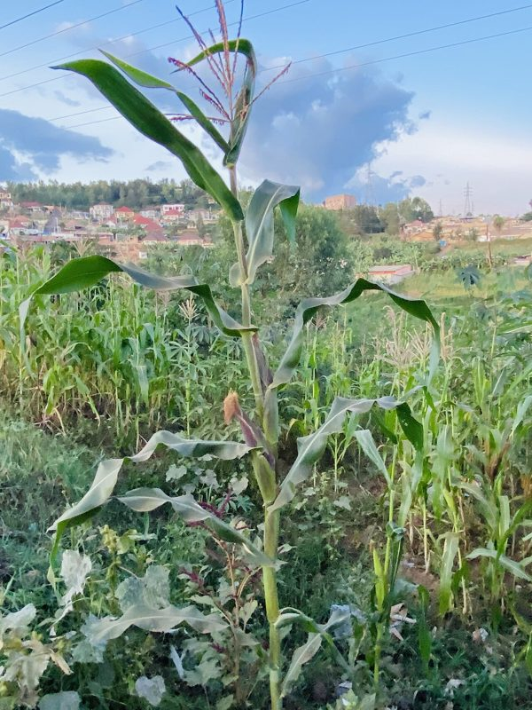
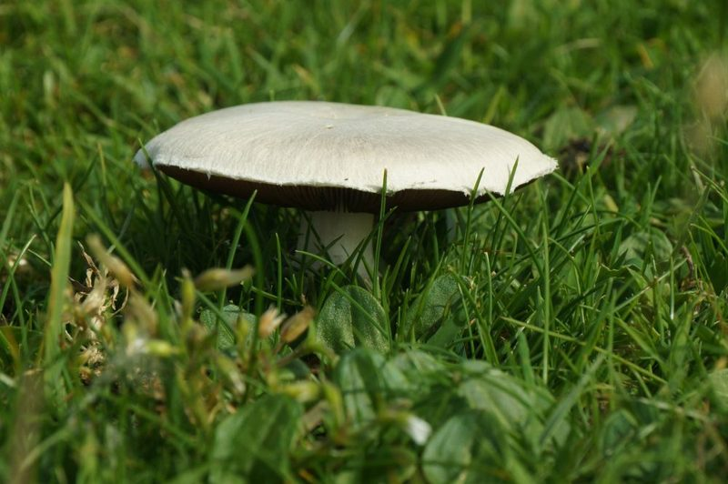
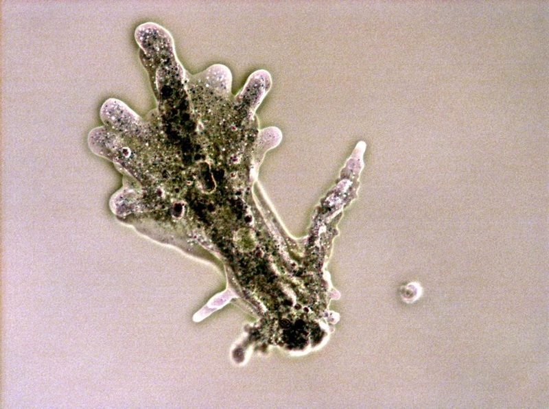
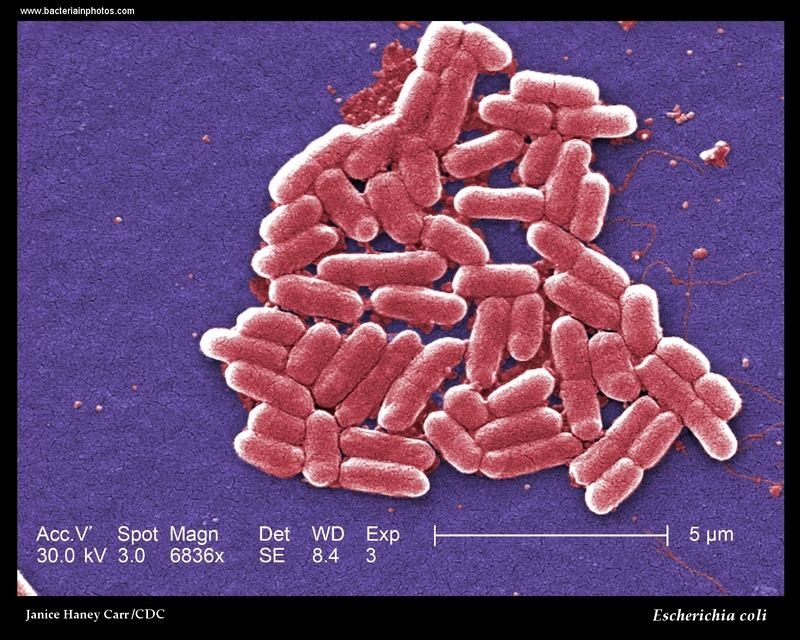
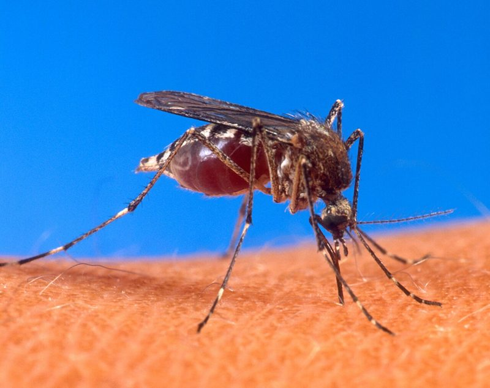
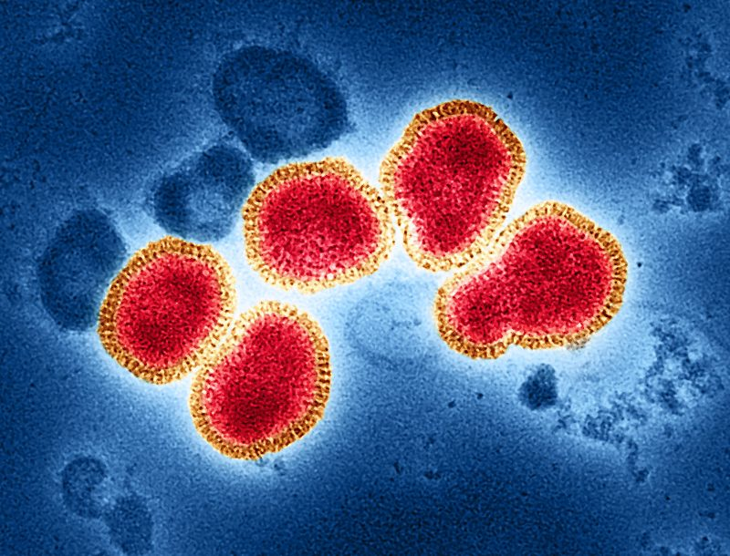
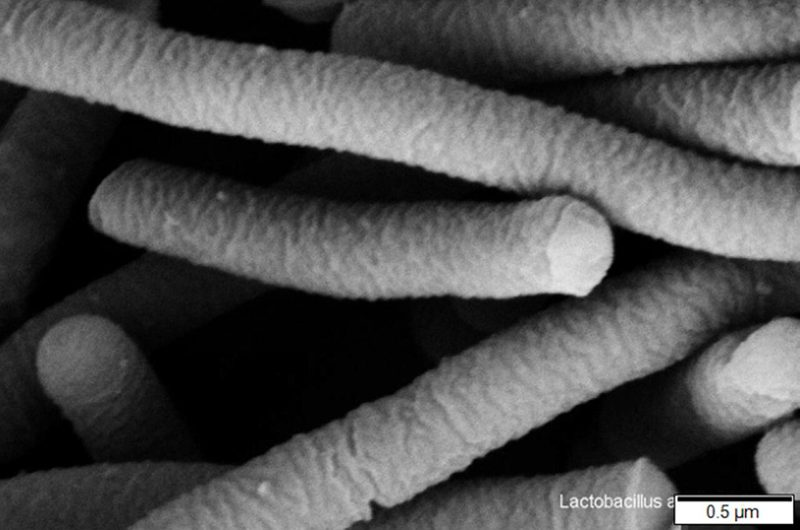

Plants
Multicellular, cellulose wall, photosynthesise, store starch or sucrose.
Maize, peas, mosses, fernsThree revision levels, four live 3D labs and a shuffled practice exam. Drag the cell, poke it, feed it, and watch the eight life processes happen.
Drag to orbit · arrow keys turn it
The eight life processes (MRS C GREN), excretion vs egestion, and cell organisation.
Excretion removes waste made inside cells (CO₂ from respiration, urea). Egestion removes undigested food that never entered any cell. Test yourself: sort each one.
| Feature | Eukaryotic | Prokaryotic |
|---|---|---|
| Nucleus | Present: DNA inside a nuclear membrane | Absent: DNA floats free in the cytoplasm |
| Genetic material | Linear chromosomes with proteins | One circular chromosome plus small rings called plasmids |
| Membrane-bound organelles | Present (mitochondria, chloroplasts, ER) | Absent |
| Cell wall | Cellulose (plants), chitin (fungi), none (animals) | Peptidoglycan |
| Kingdoms | Plants, animals, fungi, protoctists | Bacteria |
Want to see the difference? Open the Cell Inspector and switch between the plant cell and the bacterium in 3D.
The five kingdoms, fungal hyphae, saprophytic nutrition, bacteria, viruses and pathogens.

Multicellular, cellulose wall, photosynthesise, store starch or sucrose.
Maize, peas, mosses, fernsMulticellular, no cell wall, feed on other organisms, store glycogen.
Humans, insects, coral
Chitin wall, no photosynthesis, store glycogen. Multicellular (hyphae) or single-celled (yeast).
Mucor, yeast, mushrooms
Mostly single-celled eukaryotes, the “dustbin kingdom”. Some photosynthesise.
Amoeba, Chlorella, Plasmodium
Single-celled prokaryotes, peptidoglycan wall, no nucleus, plasmids.
Lactobacillus, Pneumococcus| Kingdom | Cells | Cell wall | Photosynthesis | Carbohydrate store |
|---|---|---|---|---|
| Plants | Multicellular | Cellulose | Yes | Starch or sucrose |
| Animals | Multicellular | None | No | Glycogen |
| Fungi | Multi- or unicellular | Chitin | No | Glycogen |
| Protoctists | Mostly unicellular | Varies | Some (Chlorella) | Varies |
| Bacteria | Unicellular, prokaryote | Peptidoglycan | Some species | Varies |
A multicellular fungus such as Mucor is a network of threads called hyphae with many nuclei in shared cytoplasm. The whole network is the mycelium.
Viruses have no cells: no cytoplasm, membrane or organelles. They cannot carry out life processes alone and reproduce only inside a host cell.



Control mechanisms, osmosis and multi-mark answers.
Pond water is more dilute than the cytoplasm, so water floods in by osmosis. The contractile vacuole collects it and pumps it out. Adjust the pond and try switching the pump off.
Regulating water to keep the inside stable is the life process Control (homeostasis).
Part A is worth 3 marks (no independent life processes). Part B is worth 2 marks (no cell structure). Tap every statement you would put in a full-mark answer, then check.
Real-time 3D you can orbit, poke and test. Every lab also works with the keyboard.
Keep the cell alive and switch on all eight MRS C GREN processes.
Click or tap the cell to stimulate it · drag to orbit
Tip: waste builds up when respiration is high and excretion is low. Heat above about 41°C slows the enzymes.
Orbit a plant cell, animal cell, bacterium or virus. Tap a part to learn it, then try the label challenge.
Drag to orbit · arrow keys turn it · tap a part
Tap any part of the model or choose one above.
Feed the fungus: secrete enzymes onto the bread, then watch soluble nutrients get absorbed.
Click on the bread to secrete enzymes from the nearest hypha
Try growing more hyphae: more surface area means faster absorption.
Identify mystery organisms from as few clues as you can, or use the classification key.
20 questions drawn at random from the bank. Answer orders reshuffle every time.
The complete written study guide covers every topic on this page in one document.
Download the revision guide hereThese are outside websites. They do not record your work here.